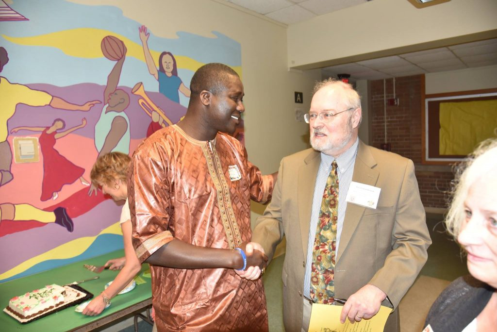
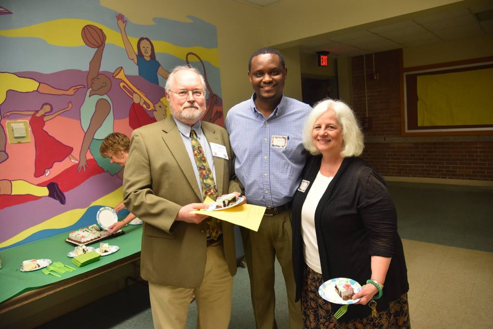
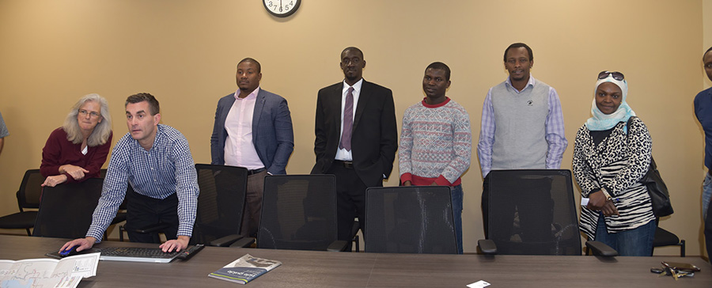
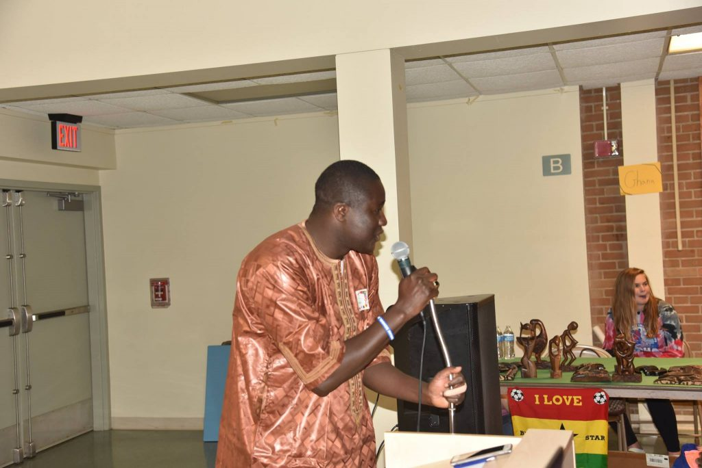
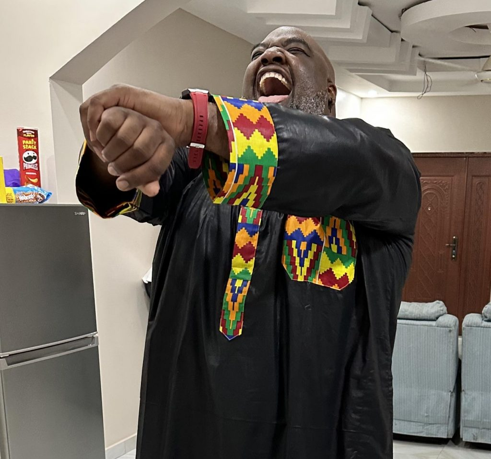

Our story
How a grassroots campaign on Madison's north-east side grew into the city's first sister city partnership in Africa.
From City Council to Kanifing
In April 2015, after a long and hard-fought campaign in which volunteers knocked on almost 4,000 doors during a brutal Wisconsin winter, Madison resident Samba Baldeh, of Gambian descent, was elected to the Madison Common Council. He outpolled a long-term incumbent by 32 votes to become Alder for District 17 on the city's far north-east side — the first African ever to do so in the history of the city.
Alder Baldeh was appointed to several committees, including Madison's Sister City Committee, which seeks to create lasting friendships and provide a forum for the exchange of ideas between peoples of different backgrounds and cultures. Madison had eight such relationships around the world, but none in Africa. Mayor Paul Soglin soon invited him to discuss establishing a sister city partnership on the African continent.

Building the partnership
-
Spring 2015
An open invitation
Believing in equal opportunity for all, Alder Baldeh shared the mayor's intent with the African Association of Madison. Jerreh Kujabi responded with a plan to convene a committee exploring a sister city in The Gambia.
-
July 2015
An exploratory committee forms
Dedicated community members volunteered to serve. Jo Oyama Miller, chair of the Sister City Collaboration Committee, briefed the group on the requirements and process.
-
2015–2016
Kanifing is selected
After deliberation, the Kanifing Municipal Council (KMC) was chosen, and the committee was formalized with Jerreh Kujabi as acting chair.
-
Agreement
Protocols & a local partner
Protocols for cooperation in education, health, culture and the environment were agreed with KMC. FAWEGAM — the Forum for African Women Educationalists, Gambia Chapter — was selected as the local non-profit partner to help deliver programs.


Our team
Volunteers from across the Madison community who lead our committees and programs.

Jerreh Kujabi
Founding Acting Chair
Samba Baldeh
Founding Member
Fatou Ceesay
Chair, Planning Committee
Musa Jallow
Chair, Madison–Kanifing Liaison Committee
Nyima Jabang
Chair, Outreach Committee

Leon Bettis
Chair, Technology Committee
By-laws
The Madison–Kanifing Sister City Committee operates under by-laws adopted in 2016, which set out our purpose, membership, officers and committee structure.
MKSC By-Laws (2016)
Official governing document of the committee